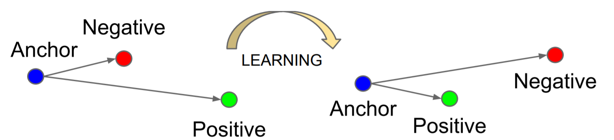

Finetuning ResNet50 on Totally Looks Like Dataset¶
In this tutorial, we will use Finetuner to finetune embeddings on Totally Looks Like dataset (TLL) dataset. The dataset consists of 6016 pairs of images (12032 in total).
Tip
Totally-Looks-Like is a dataset and benchmark challenging machine-learned representations to reproduce human perception of image similarity. As shown below, each image patch in the left has a corresponded similar image patch in the right.

The rationale for choosing TLL dataset is
it is a relatively small dataset and doesn’t require training a large network from scratch. So we train only part of the ResNet-50 by freezing layers.
it consists of pairs of images that can be formed as positive pairs (same classes). A random image can be considered as a negative pair. We construct
tripletand use theTripletLoss.
After fine-tuning, the distance between positive pairs is expected to be pulled closer, while the distance between positive and negative pairs is expected to be pushed away.

Data preparation¶
We will download left.zip and right.zip, as stated before,
each of them consists of 6016 images which can be formed into pairs based on the same file name.
pip install gdown
pip install finetuner
pip install torchvision
gdown https://drive.google.com/uc?id=1jvkbTr_giSP3Ru8OwGNCg6B4PvVbcO34
gdown https://drive.google.com/uc?id=1EzBZUb_mh_Dp_FKD0P4XiYYSd0QBH5zW
unzip left.zip
unzip right.zip
Afterward, we load all images from unzipped left and right folders and turn them into sorted order as jina DocumentArray.
80% of the dataset will be used to train the machine learning model.
While 20% of the dataset will be used to evaluate the quality of embeddings on the search task.
from docarray import DocumentArray
left_da = DocumentArray.from_files('left/*.jpg')
right_da = DocumentArray.from_files('right/*.jpg')
# we use 80% for training machine learning model.
left_da.sort(key=lambda x: x.uri)
right_da.sort(key=lambda x: x.uri)
ratio = 0.8
train_size = int(ratio * len(left_da))
train_da = left_da[:train_size] + right_da[:train_size]
Preparing training data¶
After loading data into jina DocumentArray, we can prepare documents for training.
Finetuner will do the most challenging work for you, all you need to do is to:
Assign a label into each
Documentnamedfinetuner_labelas its class name.Perform pre-processing for the document. In this case, we load the image from URI, normalize the image and reshape the image from
H, W, CtoC, H WwillCis the color channel of the image.
def assign_label_and_preprocess(doc):
doc.tags['finetuner_label'] = doc.uri.split('/')[1]
return doc.load_uri_to_image_blob().set_image_blob_normalization().set_image_blob_channel_axis(-1, 0)
train_da.apply(assign_label_and_preprocess)
Choosing the base model¶
We create a pre-trained ResNet-50 model from torchvision, and since we want to learn a better embedding,
the first thing is to see which layer is suitable for use as an embedding layer.
You can call finetuner.display(model, input_size) to plot the model architecture.
import finetuner as ft
import torchvision
resnet = torchvision.models.resnet50(pretrained=True)
ft.display(resnet, (3, 224, 224))
You can get more information in Tailor docs.
Since the model is pre-trained on ImageNet on a classification task, so the output fc layer should not be considered as embedding layer.
We can use the pooling layer adaptiveavgpool2d_173 as the output of the embedding model.
This layer generates a 2048 dimensional dense embedding as output.
Tip
Selecting an appropriate embedding layer is non-trivial. In general, you have to remove the task-specific top from the pre-trained model.
Training¶
Model training is straitforward in finetuner. You’ll need to config several hyperparameters, plugin your model and training set, that’s it.
The script below demonstrates how to combine Tailor + Tuner interface for model fine-tuning.
The parameter above to_embedding_model=True are Tuner parameters, the rest are Tailor parameters.
We save the returned embedding model as tuned_model,
given an input image, at inference time, this model generates a representation of the image (2048 dimensional vectors).
import finetuner as ft
from finetuner.tuner.pytorch.losses import TripletLoss
from finetuner.tuner.pytorch.miner import TripletEasyHardMiner
tuned_model = ft.fit(
model=resnet,
train_data=train_da,
epochs=6,
batch_size=128,
loss=TripletLoss(miner=TripletEasyHardMiner(neg_strategy='hard'), margin=0.3),
learning_rate=1e-5,
device='cuda',
to_embedding_model=True,
input_size=(3, 224, 224),
layer_name='adaptiveavgpool2d_173',
num_items_per_class=2,
freeze=['conv2d_1', 'batchnorm2d_2', 'conv2d_5', 'batchnorm2d_6', 'conv2d_8', 'batchnorm2d_9', 'conv2d_11', 'batchnorm2d_12'],
)
But how does it work?:
Finetuner will “look into” your labels defined in the
tagof the jinaDocument, and find the positive sample and find a hard-negative (as we useneg_strategy='hard'') sample as triplets.Finetuner try to optimize the
TripletLoss, aiming at pulling documents with the same classes closer, while pushing documents with different class away.

Evaluating the embedding quality¶
We’ll use hit@10 to measure the quality of the representation on the search task.
hit@10 means for all the test data, how likely the positive match ranked within the top 10 matches with respect to the query Document.
Remind that we have the train_da ready, now we need to perform the same preprocessing on test DocumentArray:
def preprocess(doc):
return doc.load_uri_to_image_blob().set_image_blob_normalization().set_image_blob_channel_axis(-1, 0)
test_left_da = left_da[train_size:]
test_right_da = right_da[train_size:]
test_left_da.apply(preprocess)
test_right_da.apply(preprocess)
And we create embeddings on our test set using the fine-tuned model:
# use finetuned model to create embeddings， only test data
test_left_da.embed(tuned_model, device='cuda')
test_right_da.embed(tuned_model, device='cuda')
Last but not least,
we match test_left_da against test_right_da.
You can consider test_left_da as user queries, while test_right_da is our indexed document collection.
For each test_left_da, match function will find top-10 nearest embeddings in test_right_da.
And we evaluate result with hit@10
test_left_da.match(test_right_da, limit=10)
def hit_rate(da, topk=1):
hit = 0
for d in da:
for m in d.matches[:topk]:
if d.uri.split('/')[-1] == m.uri.split('/')[-1]:
hit += 1
return hit/len(da)
for k in range(1, 11):
print(f'hit@{k}: finetuned: {hit_rate(test_left_da, k):.3f}')
Compare fine-tuned model and pre-trained model, how much performance gain we get? We conducted an experiment using pre-trained ResNet50 on ImageNet, by chopping off the last classification layer, the rest of the model serves as a feature extractor.
The result is demonstrated in the table below:
| hit@k | pre-trained | fine-tuned |
|---|---|---|
| hit@1 | 0.068 | 0.122 |
| hit@5 | 0.142 | 0.230 |
| hit@10 | 0.183 | 0.301 |
Now let’s look at some results that Finetuned model did good and pretrained ResNet50 did bad.

Here are some results in reverse: i.e. pretrained ResNet did “good” but Finetuned did “wrong”.